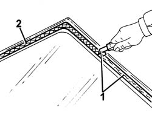

7035A50 WINDSCREEN GLASS - Clean edges and sand small abrasions
- Path
- Procedures > 70 FITTINGS > 7035 BODY WINDOW GLASSES > 7035A WINDSCREEN > 7035A50 WINDSCREEN GLASS - Clean edges and sand small abrasions
- Kind
- repair procedure (removal / refitting; the operation number is the code)
- Applies to
- all engines; all production periods
- Interactive page
- https://sloeber94.github.io/elrnDB-lThss/en/#/113365
Applies to: all engines; all production periods
1. Using suitable equipment, cut and level the bead of sealant on the windscreen to reduce it to a minimum without necessarily removing it completely.
2. Clean the perimeter of the serigraphed area of the windscreen thoroughly with compressed air and degrease it using heptane.

Applies to: all engines; all production periods
- Check that the glass is not damaged.
- When bonding, 60 minutes after cutting and levelling the bead of sealant, the surface of the actual sealant must be treated with the special activating product and it is necessary to wait for 15 minutes before fitting the windscreen.
 | Description | Qty. | Component | Type | Classification |
|---|---|---|---|---|---|
. | PRIMER | - | WINDSCREEN GLASS SEALING STRIP | - | - |